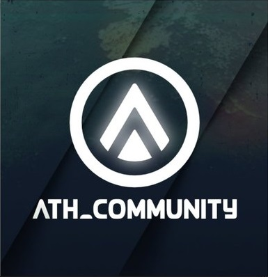

DISCLAIMER: Cette Une de journal est un exercice d'étudiant et en aucun cas une version officielle
émise par la structure.
Je ne suis pas journaliste professionnelle et n'ai pas travaillé sérieusement mes infos avant
de rédiger cette page.
Les partenariats avec ATH (sauf pour LMN8) affichés en bas de page n'existent pas en réalité.
Ceci est un travail de débutant en dévellopement Web, merci d'être indulgent !

ATH News
Le journal de la structure ATH traitant de l'actualité eSport